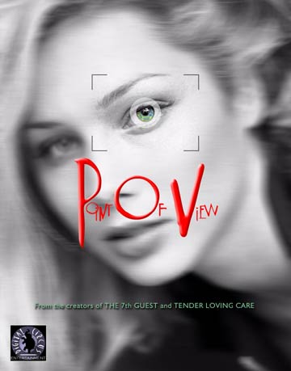
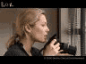

|

What's your Point of View?
Aftermath Media's follow-up to their unique and innovative interactive movie "Tender Loving Care", succeeds on it's own terms.
- - - - - - - - - -
by Anthony Larme
OINT OF VIEW or "PoV" is a truly innovative art house movie from Canada that makes intriguing use of the interactive capabilities of the DVD medium. It easily succeeds in providing an absorbing entertainment experience for thoughtful viewers that transcends its relatively low budget.
All aspects of the storyline revolve around PoV's central character, Jane Bole, a beautiful introverted and seductive artist/cleaning lady, played brilliantly by Stefanie von Pfetten, who gradually recovers her self-confidence in romantic matters as she strives to come to terms with a dark incident in her past - a traumatic event which she justifiably fears may soon be repeated. Jane's bizarre requited romance with across the street neighbour, musician/paperboy Frank (Chris Bradford), provides plenty of opportunities for fantasizing, mild eroticism, and the building up of a strong aura of tantalizing mystery and considerable sexual tension as Frank warily but persistently tries to unveil the reasons behind her mysteriousness.
During the course of the movie, a surprisingly wide variety of adult themes are at least touched upon. Particularly prominent is the theme of big city loneliness and alienation that can lead to odd and obsessive behaviour. Others include issues of female beauty and attractiveness and the problems they can cause. Most inspiring is the theme of facing up to one's past and coming to terms with one's fears so that retreat from the world is no longer a viable or desirable option. Themes are all explored by excellent acting and skilful, sensitive directing, thereby negating the need for any nudity or excessive sexual activity.
Viewers are pulled into all these developments by becoming active participants in deciding upon some directions the storyline will take and by other interesting methods that all but preclude traditional passive attention. For example, at the end of each of PoV's first eleven chapters, viewers are asked several multiple choice questions based upon their personal opinions on the characters and themes portrayed in the scenes they have just watched. Most questions are quite relevant, but those with less relevance are still valuable to get the viewer to think deeper about the themes in the story and thus get them more emotionally involved in the developments. Depending upon one's responses, some future scenes are omitted, modified or added. Furthermore, the end of most chapters also includes bonus material which provides further depth to the storyline in the form of static pictures of the characters' personal papers and other belongings, and brief visual segments, "Encounters", where select characters speak their innermost thoughts directly to the camera. Different viewings of PoV can result in slightly different plotlines. Complete viewings can take anywhere from two to four hours each and one's "games" may be saved/reloaded using a special code shown on screen.
Director/writer David Wheeler has considerably surpassed his earlier work, Tender Loving Care, here in many respects. He filmed PoV in digital video using minimal artificial lighting, thereby providing a clear, realistic look for the entire production, a large percentage of which was successfully filmed at night. Significant artistic use is made of black and white video, mainly to indicate flashbacks or at least scenes where Jane is somehow reminded of her dark past. Where appropriate, stills and slow motion are used in certain scenes. Wheeler set and filmed PoV in beautiful Vancouver, British Columbia, and it shows - wide angled shots of downtown and other areas are presented and actual locations rather than film sets were used wherever possible.
Prominently complementing many movie sequences are the highly memorable and appropriate musical compositions of local Vancouver electronica/dance musicians Payton Rule and jefreejon who actually appear as characters in one nightclub scene. Some scenes contain little or no dialogue, so their music and song combined with the superb acting and directing can lead one to see such scenes as well-designed music videos as well as vital plot enhancements. These types of scenes tend to be concentrated in the first half of the movie, the latter half containing many dialogue heavy scenes that last for several minutes with little or no music.
Topping off this magnificent DVD are a couple of bonus extras: a trailer and a "making of" special. The trailer uses mainly a remix of the song/music from chapter one of the movie and provides a useful overview of what to expect without spoiling too much. Conversely, the "making of", while extremely interesting, has been oddly placed, allowing those who have not completed the movie in full at least once to view it. Those who want to avoid several spoilers should avoid watching it for as long as possible. The "making of" provides a personal, often quaint and amusing overview of some of the reality behind PoV. Both the cast and crew get screen time and the director provides the overall focus for this special. Seeing Stefanie von Pfetten's real life personality is the highlight of the special and she is to be highly commended for her positive attitudes.
Failings in PoV are not easy to find. If one had to be picky, one could say that: some movie scenes contain unexplained lines across the screen; there are some relatively rare misspellings and grammatical errors in the text; the storyline is not as customizable as it might be and contains some minor inconsistencies; and that the "making of" special is inappropriately placed on the disc, but these errors are so trivial compared to PoV's positive points as to be barely worth a mention.
Overall, Point of View is an outstanding, innovative contribution to the DVD medium that this reviewer is honoured to have in his DVD collection and fully recommends to any mature person who likes to think and interact with intelligent movies.
My Rating? 9.5 out of 10!.
 Watch the PoV trailer
PoV DVD, CD-ROM and Soundtrack Album available at our online store
 Download MP3 tracks from the PoV Soundtrack CD Download MP3 tracks from the PoV Soundtrack CD

|